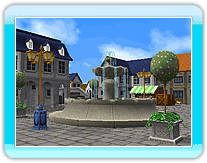
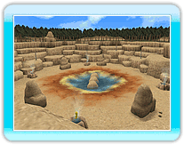

Cada mapa tienes sus propias características especiales para potenciar la experiencia de juego. Hay distintas variaciones de un mismo mapa que pueden ser escenarios de batallas completamente distintas. Los mapas se dividen además en grandes (G) y pequeños (P).
 ● Parque
● Parque
El parque está lleno de hermosa vegetación y tiene todo tipo de equipamientos. Asegúrate de sacar el máximo partido de todos los artilugios si quieres ganar.
 ● Playa
● Playa
Esta isla tropical que recuerda a los Mares del Sur está llena de bellas playas de arena blanca.
Olas, cocoteros y tablas de surf añaden algo especial a este mapa. Asegúrate de sacar el máximo partido de todo ello.
● Plaza
Las calles de esta gloriosa plaza están llenas de casas, tiendas y caminos laberínticos y tortuosos que la hacen muy especial. Sácales el máximo partido.
● Parque natural
Este impresionante parque natural está rodeado de formaciones rocosas,
bien conocidas por sus escarpadas pendientes y humeantes géiseres. No hay muchos lugares donde esconderse aquí. Tendrás que demostrar lo que vales.